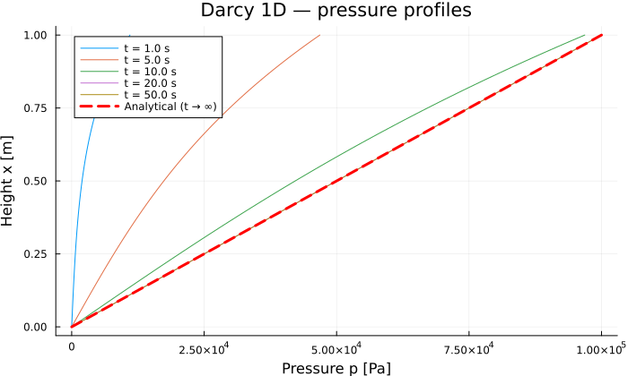

Darcy Column 1D
Transient single-phase Darcy flow in a vertical saturated soil column, on VoronoiFVM.jl. The steady state is known in closed form, which makes this a convenient check on the whole chain.
Physical problem
The pore pressure $p$ [Pa] is the only unknown:
\[S \frac{\partial p}{\partial t} - \nabla \cdot \left(\frac{K}{\mu} \nabla p\right) = 0\]
| Boundary | Condition |
|---|---|
| $x = 0$ (bottom) | Dirichlet $p = 0$ |
| $x = L$ (top) | Dirichlet $p = p_\text{top} \cdot r(t)$ (ramp) |
The ramp $r(t) = \min(1,\, t / t_c)$ removes the jump between the zero initial condition and the imposed pressure, which would otherwise force very small time steps at startup.
Reference solution
At steady state the profile is linear:
\[p(x) = p_\text{top} \cdot \frac{x}{L}\]
Parameters
| Symbol | Value | Unit | Description |
|---|---|---|---|
| $K$ | $10^{-12}$ | m² | Intrinsic permeability |
| $\mu$ | $10^{-3}$ | Pa·s | Dynamic viscosity |
| $S$ | $10^{-8}$ | Pa⁻¹ | Storage coefficient |
| $L$ | $1.0$ | m | Column length |
| $p_\text{top}$ | $10^5$ | Pa | Pressure imposed at the top |
The characteristic diffusion time is $t_c = S \mu L^2 / K = 10$ s.
using PoroMechanics
using VoronoiFVM
using ExtendableGrids
using PrintfModel definition
The parameters are grouped in a Base.@kwdef struct with defaults; multiple dispatch on that struct selects the constitutive behaviour.
"""
DarcyModel
Linear single-phase Darcy model.
Unknown : pore pressure p [Pa].
PDE : S ∂p/∂t = ∇·(K/μ · ∇p)
"""
Base.@kwdef struct DarcyModel{T} <: AbstractPoroModel
K::T = 1e-12 # intrinsic permeability [m²]
mu::T = 1e-3 # dynamic viscosity [Pa·s]
S::T = 1e-8 # storage coefficient [-/Pa]
L::T = 1.0 # column length [m]
p_top::T = 1.0e5 # pressure imposed at the top [Pa]
end
PoroMechanics.nspecies(::DarcyModel) = 1
# Promote rather than require a single type: a `Dual` in one parameter leaves the rest
# `Float64`, which is what differentiating with respect to that parameter does.
DarcyModel(K, mu, S, L, p_top) = DarcyModel(promote(K, mu, S, L, p_top)...)
PoroMechanics.species_names(::DarcyModel) = [:p]Constitutive behaviour
Unused callback arguments are typed ::Any rather than given _-prefixed names, which keeps the linter quiet.
"""Darcy flux: f = (K/μ) · (p₁ − p₂)."""
function PoroMechanics.flux!(f, u, ::Any, m::DarcyModel, ::Any)
f[1] = (m.K / m.mu) * (u[1, 1] - u[1, 2])
end
"""Storage term: S · p."""
function PoroMechanics.storage!(f, u, ::Any, m::DarcyModel, ::Any)
f[1] = m.S * u[1]
end
"""
Boundary conditions:
Region 1 (x = 0) : Dirichlet p = 0
Region 2 (x = L) : Dirichlet p = p_top · ramp(t)
"""
function PoroMechanics.bcondition!(f, u, bnode, m::DarcyModel, ::Any)
t_c = m.S * m.mu * m.L^2 / m.K # characteristic time
p_bc = m.p_top * min(1.0, bnode.time / t_c)
boundary_dirichlet!(f, u, bnode; species = 1, region = 1, value = 0.0)
boundary_dirichlet!(f, u, bnode; species = 1, region = 2, value = p_bc)
endPoroMechanics.bcondition!Solving
function run_darcy(; N = 100, verbose = false)
m = DarcyModel()
t_c = m.S * m.mu * m.L^2 / m.K # = 10 s
# 1D grid over [0, L]
grid = simplexgrid(range(0.0, m.L; length = N + 1))
sys = fvm_system(m, grid)
inival = unknowns(sys; inival = 0.0)
t_end = 500.0
dt = t_c / 20
ctrl = VoronoiFVM.SolverControl(;
Δt = dt,
Δt_min = dt,
Δt_max = t_end / 10,
# Δu_opt = p_top/10: VoronoiFVM adapts Δt so that the largest pressure
# change per step stays below this threshold.
Δu_opt = m.p_top / 10,
store_all = true,
reltol = 1e-6,
verbose = verbose,
)
tsol = solve(sys; inival, times = (0.0, t_end), control = ctrl)
return tsol, grid, m
end
tsol, grid, model = run_darcy()([0.0 0.0 … 0.0 0.0;;; 5.112320893454595e-37 5.112320893454595 … 4781.278888289644 5000.0;;; 2.4051254648241346e-36 24.051254648241343 … 10652.768573774194 10999.999999999998;;; … ;;; 1.0000000000000004e-34 1000.0000000000001 … 99000.0 100000.0;;; 1.0000000000000004e-34 1000.0000000000001 … 99000.0 100000.0;;; 1.0000000000000004e-34 1000.0000000000001 … 99000.0 100000.0], ExtendableGrids.ExtendableGrid{Float64, Int32}(dim=1, nnodes=101, ncells=100, nbfaces=2), Main.DarcyModel{Float64}(1.0e-12, 0.001, 1.0e-8, 1.0, 100000.0))Results
using Plots
xcoords = grid[Coordinates][1, :]
t_c = model.S * model.mu * model.L^2 / model.K10.000000000000002Convergence to the analytical solution
p_ref = model.p_top .* xcoords ./ model.L
p_final = tsol[1, :, end]
err_L2 = sqrt(sum((p_final .- p_ref) .^ 2) / length(p_final))
err_Linf = maximum(abs.(p_final .- p_ref))
@printf("Nodes : %d\n", length(xcoords))
@printf("t_c : %.1f s\n", t_c)
@printf("Time steps : %d\n", length(tsol.t) - 1)
@printf("L2 error : %.2e Pa\n", err_L2)
@printf("L∞ error : %.2e Pa\n", err_Linf)
err_Linf < 0.01 * model.p_top ? println("✓ err < 1 %") : println("✗ err > 1 %")Nodes : 101
t_c : 10.0 s
Time steps : 40
L2 error : 2.61e-12 Pa
L∞ error : 7.28e-12 Pa
✓ err < 1 %Pressure profiles over time
p = plot(;
xlabel = "Pressure p [Pa]",
ylabel = "Height x [m]",
title = "Darcy 1D — pressure profiles",
legend = :topleft,
size = (700, 420),
)
for frac in [0.1, 0.5, 1.0, 2.0, 5.0]
t_req = frac * t_c
it = argmin(abs.(tsol.t .- t_req))
plot!(p, tsol[1, :, it], xcoords; label = "t = $(round(t_req; sigdigits = 2)) s")
end
plot!(
p, p_ref, xcoords;
linewidth = 3, color = :red, linestyle = :dash, label = "Analytical (t → ∞)",
)
p
Key points
- Time ramp — avoids the IC/BC discontinuity that would otherwise force very small time steps at startup.
::Anyfor unused arguments — preferred over_-prefixed names, to avoid linter warnings.store_all = true— keeps every internal step intsol, so the profiles at intermediate times can be plotted without re-running.